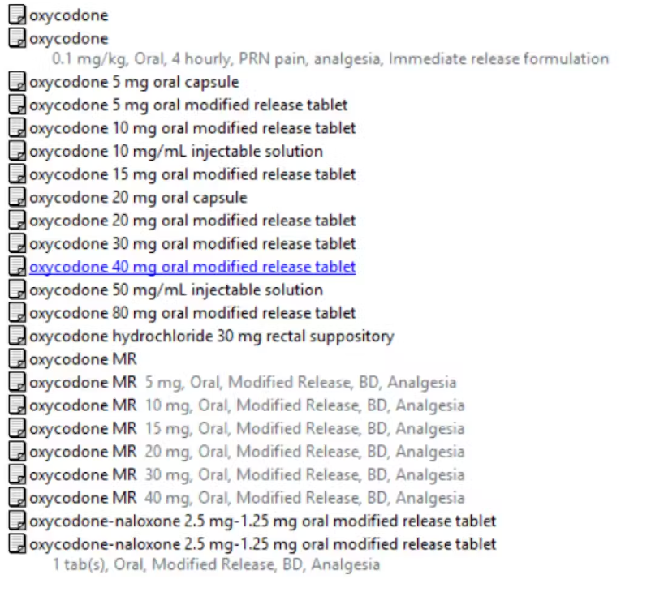

Every time you are prescribed medicine in hospital a computer will prompt your doctor about the appropriateness of the medicine and its dose. Every time health professionals update patient records on the computer they need to fill in the appropriate information in the correct spot, or choose an option from a drop-down menu. But as a growing body of research shows, these electronic systems are not perfect. Our new study shows how often these technology-related errors occur and what they mean for patient safety. Often they occur due to programming errors or poor design and are less to do with the health workers using the system. What did we look at? What did we find? Our team reviewed more than 35,000 medication orders at a major metropolitan hospital to understand how frequently technology-related errors occur. We focused on errors made when medications are prescribed or ordered via a computer-based system. In many hospitals, these systems have replaced the clipboard that used to hang at the end of a patient’s bed.
Our research showed that as many as one in three medication errors are technology-related. That is, the design or functionality of the electronic medication system facilitated the error. We also examined how technology-related errors changed over time by reviewing rates of errors at three time points: in the first 12 weeks of using the system, and at one and four years after it was implemented. We may expect technology-related errors to become less frequent over time as health professionals become more familiar with systems. However, our research showed that although there is an early “learning curve”, technology-related errors continued to be an issue for many years after electronic systems are implemented. In our study, the rate of technology-related errors was the same four years after the system went in as it was in the first year of use. How could errors happen? Errors can happen for a number of reasons. For instance, prescribers can be confronted with a long list of possible dose options for a medication and accidentally choose the wrong one. This can lead to a dose less than, or more than, the one intended. In our study, we found high-risk medications were frequently associated with technology-related errors. These included oxycodone, fentanyl and insulin, all of which can have serious adverse effects if prescribed incorrectly.

Technology-related errors can also happen at any point in a patient’s care when a computer is used. One case in the United States involved a nurse accessing and administering the wrong medicine. She obtained the medicine from a computer-controlled dispensing cabinet (known as an automated dispensing cabinet), which is used to store, dispense and track medicines. Through poor design, the cabinet allowed the nurse to search for a medicine by entering just two letters. Good design would not have displayed any medication options with only two letters. The nurse selected and administered the wrong drug to the patient, causing cardiac arrest and the nurse faced a criminal trial. Automated dispensing cabinets are being increasingly rolled out in Australian hospitals. Earlier this year we heard of an error in South Australia’s electronic medical record system. This miscalculated the due date for more than 1,700 pregnant women, possibly prompting premature inductions of labour.
We produce a series of safety bulletins for the health system that describe and address specific examples of poor system design we have identified during our research or others working in the system have brought to our attention. These include a drop-down menu that allows prescribing of a medicine via injection into the spine. This particular medicine would be fatal if administered this way. Another shows an in-built calculator that rounds up or down the doses for medication according to set rules. But this may lead to incorrect doses in very young or lower-weight children. For each example, we include recommendations to optimise the systems. Organisations can then use these specific examples to test their systems and take action. What else would improve safety? With increasing digitisation in our hospitals and health services, the risk of technology-related errors increases. And that’s even before we talk about the potential for error in artificial intelligence used in our health systems. We’re not calling for a return to paper-based records. But until we commit to the task of making computer-based systems safe, we will never fully benefit from the enormous potential digital systems could deliver in health care. Systems need to be continually monitored and updated, to make them easier and safer to use and to prevent issues from becoming catastrophic. Health IT managers and developers need to understand errors and recognise when system design is suboptimal. Since clinicians are often the first to notice issues, there should also be mechanisms to investigate and address their concerns promptly, supported by systematic data on technology-related errors.